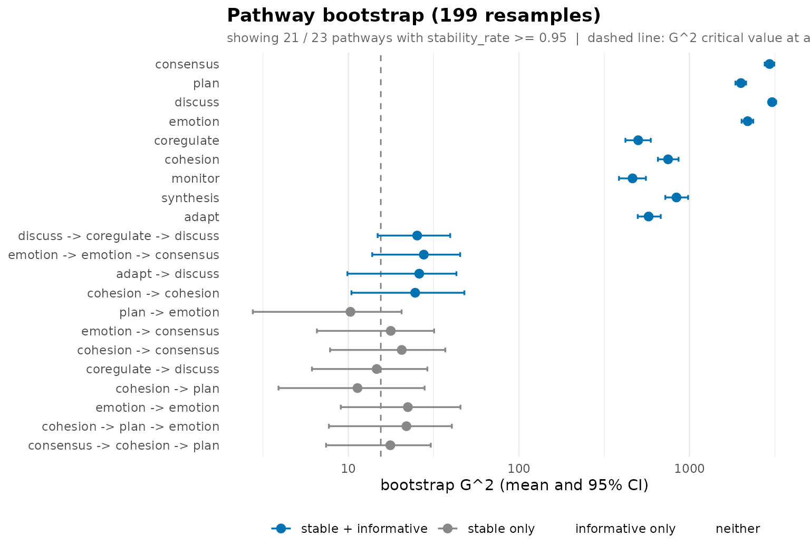
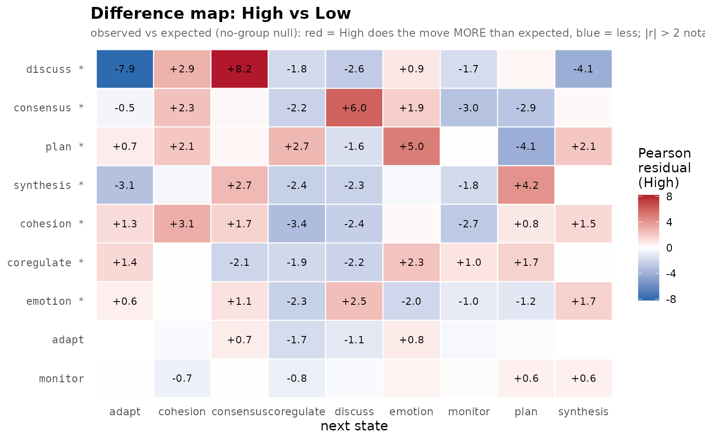

Case study: collaborative regulation by achievement
Written by Mohammed Saqr and Sonsoles López-Pernas
Source:vignettes/articles/case-regulation-achievement.Rmd
case-regulation-achievement.RmdWhen students learn together, regulation is a shared activity. Members of a group plan the task, monitor their progress, discuss and reach consensus, adapt when something fails and attend to the emotional climate of the group. These moves are not independent: a plan invites a response, a disagreement calls for discussion, and a moment of cohesion often precedes a decision. The temporal order of regulatory moves is therefore as informative as their frequency, and transition network analysis (Saqr et al., 2025) has made the first-order transitions between them a standard object of study in learning analytics.
A first-order transition model assumes that the next move depends on
the current move alone. Whether that assumption holds is an empirical
question. A variable-order transition tree, the prediction suffix tree
of Ron, Singer and Tishby (1996), lets each history keep as much of its
past as the data support: a context such as
consensus -> cohesion gets its own next-move
distribution only when it predicts differently from the shorter context
cohesion. The same idea underlies variable-length Markov
chains (Bühlmann & Wyner, 1999).
This case study addresses three questions about collaborative regulation. First, how do regulatory moves follow one another? Second, how much history is needed to predict the next move, and which longer pathways reproducibly change the prediction? Third, do high and low achievers move through regulation differently, and does that difference survive when the course in which they studied is held fixed?
Data
group_regulation_long is a bundled event log of coded
collaborative regulation, one row per regulatory move. The variables
play the following roles:
-
Actor:
Actor— the student; each student contributes one sequence of moves. -
Time:
Time— the timestamp of each move; it orders the moves and, through the default 15-minute gap rule, would split a student’s moves into separate sessions. -
State:
Action— the regulatory move, one of nine codes (adapt,cohesion,consensus,coregulate,discuss,emotion,monitor,plan,synthesis). -
Grouping:
Achiever— the student’s achievement level,HighorLow. -
Context:
Group— the collaboration group, andCourse— the course,A,BorC.
The design matters for the group comparison, so the distribution of moves over courses and achievement levels comes first.
#> Achiever
#> Course High Low
#> A 12390 0
#> B 1331 8295
#> C 0 5517Achievement and course are entangled. All moves in course A come from high achievers and all moves in course C from low achievers; only course B contains both levels. Any difference between high and low achievers may therefore partly reflect differences between courses. The last analytical section returns to this.
How do regulatory moves follow one another?
context_tree() reads the event log directly when the
actor, time and state columns are named. The tree is grown to a depth of
three moves, and a context needs at least ten occurrences to receive its
own node.
tree <- context_tree(group_regulation_long,
actor = "Actor", time = "Time", action = "Action",
max_depth = 3L, min_count = 10L)
tree#> <transitiontrees> 377 nodes, depth <= 3, 9 states [unpruned]
#> alphabet : adapt, cohesion, consensus, coregulate, discuss, emotion, monitor, plan, synthesis
#> fit on : 2000 sequences, 27533 observations
#> smoothing: floor(ymin=0.001, rule=interpolate) min_count = 10
#> (start) n=27533 -> consensus (0.25)
#> |-- adapt n=509 -> consensus (0.47)
#> | |-- consensus n=27 -> cohesion (0.48)
#> | |-- coregulate n=28 -> consensus (0.50)
#> | | `-- consensus n=21 -> consensus (0.43)
#> | |-- discuss n=259 -> consensus (0.47)
#> | | |-- consensus n=60 -> consensus (0.53)
#> | | |-- coregulate n=37 -> consensus (0.43)
#> | | |-- discuss n=48 -> consensus (0.52)
#> | | |-- emotion n=14 -> consensus (0.50)
#> | | |-- monitor n=25 -> consensus (0.40)
#> | | `-- plan n=26 -> consensus (0.42)
#> | |-- monitor n=16 -> consensus (0.50)
#> | `-- synthesis n=140 -> consensus (0.48)
#> | `-- discuss n=107 -> consensus (0.45)
#> |-- cohesion n=1695 -> consensus (0.50)
#> | |-- adapt n=130 -> consensus (0.54)
#> | | |-- consensus n=13 -> consensus (0.61)
#> | | |-- discuss n=65 -> consensus (0.55)
#> | | `-- synthesis n=32 -> consensus (0.56)
#> | |-- cohesion n=45 -> consensus (0.42)
#> | | `-- emotion n=24 -> consensus (0.46)
#> | |-- consensus n=84 -> consensus (0.51)
#> | | |-- cohesion n=11 -> plan (0.45)
#> | | |-- discuss n=13 -> consensus (0.61)
#> | | |-- emotion n=11 -> consensus (0.45)
#> ... 351 more nodes (use as.data.frame(x) or summary(x))The tree is fitted on 2000 sequences (one per student) and 27533
moves. With no history, the most likely next move is
consensus, with probability 0.25; this root distribution is
the baseline that every longer context must improve on. The unpruned
tree holds 377 contexts, many of them deep histories seen only a few
dozen times.
state_frequencies() reports how often each move
occurs.
state_frequencies(tree)#> state count proportion
#> 1 consensus 6797 0.2469
#> 2 plan 6623 0.2405
#> 3 discuss 4267 0.1550
#> 4 emotion 3075 0.1117
#> 5 coregulate 2133 0.0775
#> 6 cohesion 1839 0.0668
#> 7 monitor 1516 0.0551
#> 8 synthesis 729 0.0265
#> 9 adapt 554 0.0201consensus (24.7% of moves) and plan (24.1%)
together account for almost half of all regulation, followed by
discuss (15.5%) and emotion (11.2%).
synthesis and adapt are rare, at 2.6% and
2.0%. This imbalance shapes every later result: predicting
consensus or plan is right a quarter of the
time without any history, so the informative contexts are those that
move the prediction away from these two defaults.
common_pathways() lists the most frequent histories and
the move that most often follows each.
common_pathways(tree, top = 8)#> pathway depth count likely_next next_probability divergence changes_prediction
#> 1 (start) 0 27533 consensus 0.247 NA NA
#> 2 consensus 1 6329 plan 0.396 0.334030 TRUE
#> 3 plan 1 6157 plan 0.374 0.234143 TRUE
#> 4 discuss 1 3951 consensus 0.321 0.555626 FALSE
#> 5 emotion 1 2837 cohesion 0.325 0.555145 TRUE
#> 6 consensus -> plan 2 2336 plan 0.375 0.000648 FALSE
#> 7 plan -> plan 2 2108 plan 0.376 0.000432 FALSE
#> 8 coregulate 1 1970 discuss 0.274 0.180891 TRUEThe first-order contexts already carry clear structure. After
consensus the most likely move is plan (0.40),
and plan is most often followed by another
plan (0.37). emotion is followed by
cohesion (0.33) and coregulate by
discuss (0.27). The changes_prediction column
marks the contexts whose most likely next move differs from that of the
parent context. The two most frequent second-order contexts,
consensus -> plan and plan -> plan,
illustrate the opposite case: their next-move distributions are almost
identical to that of plan alone (divergence
below 0.001), so the extra move of history adds nothing to the
prediction.
How much history matters?
A grown tree keeps every context with enough occurrences, whether or
not it predicts better than its parent. prune_tree()
removes a context when a likelihood-ratio (G²) test does not show that
the longer history changes the next-move distribution relative to its
one-move-shorter parent.
pruned <- prune_tree(tree, criterion = "G2", alpha = 0.05)
pruned#> <transitiontrees> 23 nodes, depth <= 3, 9 states [pruned]
#> alphabet : adapt, cohesion, consensus, coregulate, discuss, emotion, monitor, plan, synthesis
#> fit on : 2000 sequences, 27533 observations
#> smoothing: floor(ymin=0.001, rule=interpolate) min_count = 10
#> pruned by: G2 alpha = 0.05
#> (start) n=27533 -> consensus (0.25)
#> |-- adapt n=509 -> consensus (0.47)
#> |-- cohesion n=1695 -> consensus (0.50)
#> | `-- cohesion n=45 -> consensus (0.42)
#> |-- consensus n=6329 -> plan (0.40)
#> | |-- cohesion n=795 -> plan (0.38)
#> | | `-- cohesion n=19 -> plan (0.37)
#> | `-- emotion n=830 -> plan (0.39)
#> | `-- emotion n=58 -> plan (0.62)
#> |-- coregulate n=1970 -> discuss (0.27)
#> |-- discuss n=3951 -> consensus (0.32)
#> | |-- adapt n=29 -> adapt (0.24)
#> | `-- coregulate n=486 -> consensus (0.32)
#> | `-- discuss n=88 -> consensus (0.27)
#> |-- emotion n=2837 -> cohesion (0.33)
#> | |-- emotion n=199 -> cohesion (0.35)
#> | `-- plan n=831 -> consensus (0.33)
#> | `-- cohesion n=33 -> cohesion (0.27)
#> |-- monitor n=1433 -> discuss (0.38)
#> |-- plan n=6157 -> plan (0.37)
#> | `-- cohesion n=221 -> plan (0.36)
#> | `-- consensus n=12 -> plan (0.83)
#> `-- synthesis n=652 -> consensus (0.46)Pruning reduces the tree from 377 to 23 nodes: the root, all nine first-order contexts, eight second-order and five third-order contexts. The fit statistics of the two trees can be compared directly.
#> logLik df nobs AIC BIC perplexity
#> unpruned -45465 3016 27533 96962 121763 5.21
#> pruned -46570 184 27533 93509 95022 5.43The pruned tree uses 184 free parameters instead of 3016. Its in-sample perplexity is slightly higher (5.43 against 5.21 equally likely next moves), which is expected because the larger tree fits its own data more closely, but its AIC (93509 against 96962) and BIC (95022 against 121763) are both lower. Perplexity is the effective number of equally likely next moves; with nine codes the uniform baseline is 9.
In-sample perplexity favors larger trees. tune_tree()
gives a held-out estimate: it splits the students into five folds, fits
each configuration on four and scores the fifth.
tuned <- tune_tree(group_regulation_long,
actor = "Actor", time = "Time", action = "Action",
max_depth = 1L:3L, min_count = 10L,
prune = c(FALSE, TRUE), folds = 5L, seed = 1L)
summary(tuned)#> <transitiontrees_tune summary> 6 configurations, 0 with a failed fold
#> selected (minimum held-out perplexity):
#> max_depth min_count smoothing prune perplexity n_nodes_avg
#> 1 10 floor(ymin=0.001, rule=interpolate) FALSE 5.46 10
as.data.frame(tuned)#> max_depth min_count smoothing prune logLik n_scored perplexity
#> 1 1 10 floor(ymin=0.001, rule=interpolate) FALSE -46738 27533 5.46
#> 2 1 10 floor(ymin=0.001, rule=interpolate) TRUE -46738 27533 5.46
#> 3 2 10 floor(ymin=0.001, rule=interpolate) TRUE -46763 27533 5.47
#> 4 3 10 floor(ymin=0.001, rule=interpolate) TRUE -46884 27533 5.49
#> 5 2 10 floor(ymin=0.001, rule=interpolate) FALSE -47111 27533 5.53
#> 6 3 10 floor(ymin=0.001, rule=interpolate) FALSE -48782 27533 5.88
#> n_nodes_avg folds_failed
#> 1 10.0 0
#> 2 10.0 0
#> 3 12.2 0
#> 4 23.4 0
#> 5 79.6 0
#> 6 344.4 0The first-order model has the lowest held-out perplexity (5.46). The pruned second-order tree is practically indistinguishable (5.47), and the pruned third-order tree is close behind (5.49). The unpruned deeper trees generalize worse: 5.53 at depth two and 5.88 at depth three, where the folds average 344 contexts. Collaborative regulation in these data therefore has short memory. The current move carries almost all the predictive information, and the longer contexts retained by pruning refine a small number of predictions without improving overall held-out prediction.
tree_dependence() quantifies the contribution of each
retained context in bits: entropy_drop is the reduction in
next-move uncertainty relative to the parent context.
tree_dependence(pruned, sort_by = "entropy_drop", top = 8)#> pathway depth count divergence entropy entropy_before
#> 1 consensus -> cohesion -> plan 3 12 0.926 0.885 2.29
#> 2 adapt 1 509 0.789 2.037 2.79
#> 3 emotion -> emotion -> consensus 3 58 0.241 1.773 2.37
#> 4 cohesion 1 1695 0.315 2.225 2.79
#> 5 plan 1 6157 0.234 2.261 2.79
#> 6 synthesis 1 652 0.892 2.270 2.79
#> 7 emotion 1 2837 0.555 2.390 2.79
#> 8 consensus 1 6329 0.334 2.393 2.79
#> entropy_drop likely_next likely_before changes_prediction
#> 1 1.404 plan plan FALSE
#> 2 0.755 consensus consensus FALSE
#> 3 0.597 plan plan FALSE
#> 4 0.567 consensus consensus FALSE
#> 5 0.531 plan consensus TRUE
#> 6 0.522 consensus consensus FALSE
#> 7 0.401 cohesion consensus TRUE
#> 8 0.399 plan consensus TRUEAmong the first-order contexts, adapt removes the most
uncertainty (0.75 bits): after an adaptation, the group almost always
returns to consensus. The largest drop overall belongs to
consensus -> cohesion -> plan (1.40 bits), where the
next move is plan with high probability, but this context
occurs only 12 times. emotion -> emotion -> consensus
(58 occurrences) lowers uncertainty by 0.60 bits relative to
emotion -> consensus. The bootstrap below asks which of
these refinements are reproducible.
Which pathways are reliable?
bootstrap_pathways() resamples students with
replacement, refits the pruned tree’s contexts in each resample, and
records two properties of each pathway: whether its count stays within
half to one and a half times the observed count (stable),
and whether its G² against the parent context exceeds the chi-squared
critical value in at least 80% of resamples
(informative).
boot <- bootstrap_pathways(pruned, iter = 199L, stat = "count", seed = 1L)
boot#> <transitiontrees_bootstrap> 199 resamples
#> stability : count in [0.50, 1.50] x observed, p < 0.05
#> informative: G^2 > qchisq(0.95, df=k-1) = 15.51, threshold 0.80
#> pathways : 23 total, 22 stable, 14 informative, 13 both
#>
#> top pathways (stable + informative first):
#> pathway depth count p_stability stability_rate stable
#> consensus 1 6329 0.005 1 TRUE
#> plan 1 6157 0.005 1 TRUE
#> discuss 1 3951 0.005 1 TRUE
#> emotion 1 2837 0.005 1 TRUE
#> coregulate 1 1970 0.005 1 TRUE
#> cohesion 1 1695 0.005 1 TRUE
#> monitor 1 1433 0.005 1 TRUE
#> synthesis 1 652 0.005 1 TRUE
#> adapt 1 509 0.005 1 TRUE
#> discuss -> coregulate -> discuss 3 88 0.005 1 TRUE
#> informative_rate informative mean_G2 ci_G2_lo ci_G2_hi
#> 1.000 TRUE 2944.9 2758.4 3139.2
#> 1.000 TRUE 2001.4 1858.0 2146.2
#> 1.000 TRUE 3046.9 2922.3 3218.0
#> 1.000 TRUE 2191.5 2020.7 2363.9
#> 1.000 TRUE 500.2 421.0 592.8
#> 1.000 TRUE 748.6 652.8 862.6
#> 1.000 TRUE 463.5 386.1 555.0
#> 1.000 TRUE 838.2 721.2 981.2
#> 1.000 TRUE 575.8 497.0 678.1
#> 0.945 TRUE 25.3 14.9 39.6
#> # ... 13 more pathways (use summary(x) for full table)Of the 23 pathways, 22 are stable, 14 are informative and 13 are both. The summary table shows the bootstrap rates and the 95% interval of each pathway’s G² against its parent.
summary(boot) |>
subset(select = c(pathway, depth, count, stability_rate,
informative_rate, ci_G2_lo, ci_G2_hi, stable, informative))#> pathway depth count stability_rate informative_rate ci_G2_lo
#> 1 consensus 1 6329 1.000 1.000 2758.44
#> 2 plan 1 6157 1.000 1.000 1858.03
#> 3 discuss 1 3951 1.000 1.000 2922.34
#> 4 emotion 1 2837 1.000 1.000 2020.67
#> 5 coregulate 1 1970 1.000 1.000 420.98
#> 6 cohesion 1 1695 1.000 1.000 652.80
#> 7 monitor 1 1433 1.000 1.000 386.08
#> 8 synthesis 1 652 1.000 1.000 721.18
#> 9 adapt 1 509 1.000 1.000 497.03
#> 10 discuss -> coregulate -> discuss 3 88 1.000 0.945 14.86
#> 11 emotion -> emotion -> consensus 3 58 1.000 0.960 13.81
#> 12 adapt -> discuss 2 29 1.000 0.874 9.88
#> 13 cohesion -> cohesion 2 45 0.995 0.834 10.43
#> 14 (start) 0 27533 1.000 NA NA
#> 15 plan -> emotion 2 831 1.000 0.131 2.76
#> 16 emotion -> consensus 2 830 1.000 0.618 6.55
#> 17 cohesion -> consensus 2 795 1.000 0.698 7.82
#> 18 coregulate -> discuss 2 486 1.000 0.392 6.13
#> 19 cohesion -> plan 2 221 1.000 0.221 3.90
#> 20 emotion -> emotion 2 199 1.000 0.774 9.04
#> 21 cohesion -> plan -> emotion 3 33 0.995 0.764 7.69
#> 22 consensus -> cohesion -> plan 3 12 0.955 0.633 7.41
#> 23 cohesion -> cohesion -> consensus 3 19 0.935 0.869 9.74
#> ci_G2_hi stable informative
#> 1 3139.2 TRUE TRUE
#> 2 2146.2 TRUE TRUE
#> 3 3218.0 TRUE TRUE
#> 4 2363.9 TRUE TRUE
#> 5 592.8 TRUE TRUE
#> 6 862.6 TRUE TRUE
#> 7 555.0 TRUE TRUE
#> 8 981.2 TRUE TRUE
#> 9 678.1 TRUE TRUE
#> 10 39.6 TRUE TRUE
#> 11 45.3 TRUE TRUE
#> 12 43.0 TRUE TRUE
#> 13 47.9 TRUE TRUE
#> 14 NA TRUE FALSE
#> 15 20.5 TRUE FALSE
#> 16 31.9 TRUE FALSE
#> 17 37.0 TRUE FALSE
#> 18 29.1 TRUE FALSE
#> 19 28.0 TRUE FALSE
#> 20 45.4 TRUE FALSE
#> 21 40.5 TRUE FALSE
#> 22 30.4 TRUE FALSE
#> 23 42.3 FALSE TRUEAll nine first-order contexts are both stable and informative. Four
longer pathways also meet both criteria:
discuss -> coregulate -> discuss (informative in
94.5% of resamples), emotion -> emotion -> consensus
(96.0%), adapt -> discuss (87.4%) and
cohesion -> cohesion (83.4%). After
adapt -> discuss, the most likely next move is
adapt again, whereas discuss alone leads to
consensus; an adaptation followed by discussion tends to
produce further adaptation. Several frequent second-order contexts, such
as plan -> emotion (831 occurrences) and
cohesion -> consensus (795), are stable but informative
in fewer than 80% of resamples: they are common, but their next-move
distributions are not reproducibly different from those of their
parents. The striking consensus -> cohesion -> plan
context is stable but informative in only 63.3% of resamples, so its
sharp prediction should not be reported as a finding.
The forest plot draws the same intervals against the chi-squared critical value.
plot(boot) + ggplot2::scale_x_log10()
Each bar is the bootstrap interval of a pathway’s G², drawn on a logarithmic axis so that the first-order contexts, whose G² runs into the thousands, do not compress the longer pathways against the axis; the dashed line is the critical value. The plot shows the 21 pathways with a stability rate of at least 0.95. Pathways whose bars lie entirely to the right of the line are reproducibly informative; those whose bars cross it are not.
Do high and low achievers regulate differently?
Passing group = "Achiever" fits one tree per achievement
level over a shared alphabet. A depth of two keeps the number of
compared contexts manageable.
grp <- context_tree(group_regulation_long,
actor = "Actor", time = "Time", action = "Action",
group = "Achiever", max_depth = 2L, min_count = 10L)
summary(grp)#> <transitiontrees_group summary> 2 groups
#>
#> group n_seq n_obs n_nodes max_depth pruned logLik df nobs AIC BIC perplexity
#> High 1000 13721 74 2 FALSE -22787 592 13721 46758 51214 5.26
#> Low 1000 13812 77 2 FALSE -22984 616 13812 47199 51840 5.28Each level contributes 1000 students (13721 and 13812 moves), and the two trees have similar size (74 and 77 contexts) and perplexity (5.26 and 5.28). Overall predictability is therefore similar; the question is whether the same histories lead to different moves.
state_frequencies() returns the move frequencies of each
group.
state_frequencies(grp)#> group state count proportion
#> 1 High consensus 3651 0.2661
#> 2 High plan 3102 0.2261
#> 3 High discuss 2166 0.1579
#> 4 High emotion 1686 0.1229
#> 5 High cohesion 1018 0.0742
#> 6 High coregulate 959 0.0699
#> 7 High monitor 668 0.0487
#> 8 High synthesis 316 0.0230
#> 9 High adapt 155 0.0113
#> 10 Low plan 3521 0.2549
#> 11 Low consensus 3146 0.2278
#> 12 Low discuss 2101 0.1521
#> 13 Low emotion 1389 0.1006
#> 14 Low coregulate 1174 0.0850
#> 15 Low monitor 848 0.0614
#> 16 Low cohesion 821 0.0594
#> 17 Low synthesis 413 0.0299
#> 18 Low adapt 399 0.0289High achievers make more consensus (26.6% against
22.8%), emotion (12.3% against 10.1%) and
cohesion moves (7.4% against 5.9%). Low achievers make more
plan (25.5% against 22.6%), monitor (6.1%
against 4.9%) and adapt moves (2.9% against 1.1%).
compare_groups() tests the difference with a permutation
test. It shuffles the achievement labels across sequences, refits the
counts and compares two omnibus statistics with their permutation
distributions. The behavioral statistic sums the Jensen-Shannon
divergence between the groups’ next-move distributions over shared
contexts, weighted by count; it asks whether the same history leads to
different moves. The usage statistic is a summed G² homogeneity
test of how often each group reaches each context. Per-context p-values
are adjusted with the Benjamini-Hochberg procedure.
cmp <- compare_groups(grp, iter = 199L, seed = 1L)
summary(cmp)#> Group comparison: High vs Low (80 contexts, 199 permutations)
#> behavioral omnibus: JSD = 1772.142 bits, p = 0.005
#> usage omnibus : G2 = 1356.46, p = 0.005
#> pathways with a behavioral difference (adjusted p < 0.05): 29
#> pathways with a usage difference (adjusted p < 0.05): 45
#> pathways whose modal next state differs between groups: 26Both omnibus p-values equal 0.005, the smallest value attainable with 199 permutations (1 / 200): no permutation produced a difference as large as the observed one. After adjustment, 29 of the 80 contexts differ in their next-move distributions and 45 in how often the groups reach them, and in 26 contexts the most likely next move differs between the groups.
The pathway table ranks contexts by behavioral divergence.
as.data.frame(cmp, what = "pathways") |> head(10)#> pathway depth count_total count_High count_Low modal_High modal_Low
#> 1 adapt -> monitor 2 16 4 12 discuss discuss
#> 2 monitor -> synthesis 2 22 11 11 consensus adapt
#> 3 synthesis -> coregulate 2 26 4 22 emotion consensus
#> 4 adapt -> discuss 2 29 4 25 consensus adapt
#> 5 plan -> synthesis 2 11 10 1 consensus adapt
#> 6 synthesis -> discuss 2 36 7 29 consensus synthesis
#> 7 consensus -> synthesis 2 38 19 19 consensus adapt
#> 8 monitor -> monitor 2 23 11 12 discuss discuss
#> 9 coregulate -> synthesis 2 32 13 19 consensus consensus
#> 10 adapt -> emotion 2 57 19 38 consensus cohesion
#> flips jsd_bits jsd_p jsd_padj usage_g2 usage_p usage_padj
#> 1 FALSE 0.381 0.150 0.293 4.12e+00 0.045 0.0773
#> 2 TRUE 0.350 0.100 0.242 3.92e-04 0.975 0.9800
#> 3 TRUE 0.316 0.145 0.293 1.36e+01 0.005 0.0110
#> 4 TRUE 0.269 0.435 0.581 1.68e+01 0.005 0.0110
#> 5 TRUE 0.189 0.855 0.912 8.63e+00 0.015 0.0269
#> 6 TRUE 0.179 0.450 0.581 1.43e+01 0.005 0.0110
#> 7 TRUE 0.170 0.325 0.531 6.77e-04 0.960 0.9800
#> 8 FALSE 0.167 0.340 0.533 3.55e-02 0.870 0.9043
#> 9 FALSE 0.157 0.450 0.581 1.08e+00 0.290 0.3695
#> 10 TRUE 0.146 0.120 0.267 6.31e+00 0.005 0.0110The largest divergences occur in rare contexts that involve
adapt and synthesis. After
synthesis -> discuss, high achievers most often move to
consensus and low achievers to synthesis;
after adapt -> discuss, high achievers move to
consensus and low achievers to adapt. These
contexts are seen 36 and 29 times, and their behavioral differences are
not significant after adjustment (jsd_padj 0.58), although
low achievers reach them more often (usage_padj 0.011). The
individual top-ranked contexts are too rare to carry the difference on
their own; the significant behavioral differences are spread over more
frequent contexts further down the table.
plot_difference() maps where the groups differ. With
depth = 1 it shows the first-order transitions; each cell
is the Pearson residual of the high achievers’ next-move counts against
the pooled expectation for that context, and passing the comparison
stars the contexts whose behavioral difference is significant after
adjustment.
plot_difference(grp, depth = 1L, comparison = cmp)
Positive (red) cells mark next moves that high achievers make more
often than expected from the pooled data, negative (blue) cells moves
they make less often. Seven of the nine first-order contexts are
starred. The largest residuals are in the discuss row:
after discussion, high achievers move to consensus more
often than expected (+8.2) and to adapt less often (-7.9).
High achievers also move from consensus to
discuss (+6.0) and from plan to
emotion (+5.0) more often, and repeat plan
less often (-4.1). Low achievers thus adapt more after discussion and
plan repeatedly, whereas high achievers more often close a discussion
with consensus.
Is the difference a course effect?
Course A contains only high achievers and course C only low
achievers, so the comparison above mixes achievement with course.
Passing block = "Course" stratifies the permutation: labels
are shuffled only within courses, which holds the course composition of
each group fixed in every permutation. Because courses A and C contain
one achievement level each, only the 700 students of course B are
actually reshuffled.
grp_course <- context_tree(group_regulation_long,
actor = "Actor", time = "Time", action = "Action",
group = "Achiever", block = "Course",
max_depth = 2L, min_count = 10L)
cmp_course <- compare_groups(grp_course, iter = 199L, seed = 1L)
summary(cmp_course)#> Group comparison: High vs Low (80 contexts, 199 stratified permutations)
#> behavioral omnibus: JSD = 1772.142 bits, p = 0.005
#> usage omnibus : G2 = 1356.46, p = 0.005
#> pathways with a behavioral difference (adjusted p < 0.05): 12
#> pathways with a usage difference (adjusted p < 0.05): 10
#> pathways whose modal next state differs between groups: 26Both omnibus p-values remain at 0.005. Under a null distribution that preserves the confounding between course and achievement, the observed difference is still larger than any permuted one, so it is not explained by course composition alone. The number of individually significant contexts falls, however, from 29 to 12 for behavior and from 45 to 10 for usage. Many of the per-context differences in the unstratified test are therefore attributable to differences between courses rather than to achievement within a course.
What the analysis shows
Collaborative regulation in these data has short memory. The current move predicts the next one about as well as any longer history: the first-order model has the lowest held-out perplexity, and pruning removes 354 of the 377 grown contexts. A few longer pathways reproducibly refine the prediction: an adaptation followed by discussion tends to produce another adaptation, and repeated emotional moves followed by consensus lead to planning. High and low achievers differ both in the moves they make after the same history and in how often they reach particular histories, and the difference remains when the permutation holds course composition fixed.
The analysis has limits. The bundled data are an example dataset, so the estimates illustrate the method rather than establish findings about collaborative regulation. Achievement is constant within each collaboration group, and students in the same group are not independent; the permutation treats sequences as exchangeable, so its p-values are optimistic with respect to group-level dependence. The stratified test holds course fixed, but in courses A and C the two levels cannot be compared at all, so the achievement contrast rests largely on course B. Finally, the 199 permutations and resamples used here keep the article fast; a reported analysis should use more.
References
Bühlmann, P., & Wyner, A. J. (1999). Variable length Markov chains. The Annals of Statistics, 27(2), 480-513. doi:10.1214/aos/1018031204
Ron, D., Singer, Y., & Tishby, N. (1996). The power of amnesia: Learning probabilistic automata with variable memory length. Machine Learning, 25(2-3), 117-149. doi:10.1023/A:1026490906255
Saqr, M., López-Pernas, S., Törmänen, T., Kaliisa, R., Misiejuk, K., & Tikka, S. (2025). Transition network analysis: A novel framework for modeling, visualizing, and identifying the temporal patterns of learners and learning processes. In Proceedings of the 15th International Learning Analytics and Knowledge Conference (LAK ’25) (pp. 351-361). doi:10.1145/3706468.3706513